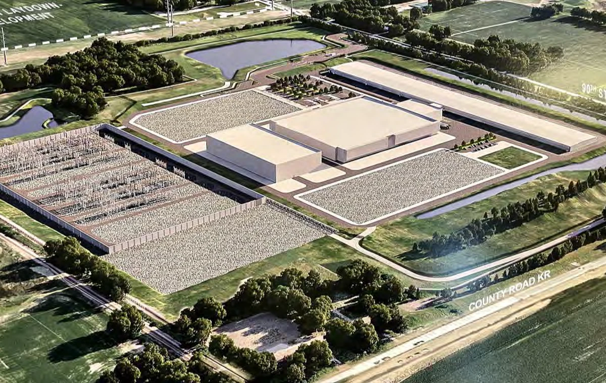

AI-ready infrastructure is not simply a larger version of a traditional data center. It requires an integrated delivery model that coordinates power, cooling, phasing, resilience, controls, and long-term expansion from the earliest decisions.

Power preparedness becomes a program decision
High-performance computing workloads create exceptional demand for power capacity, reliability, and expansion planning. Early decisions about utility strategy, central plants, redundancy, and phased energization directly influence the schedule, cost, and long-term operating model.
Program governance helps leadership connect these technical decisions to investment priorities, permitting strategy, procurement lead times, and the sequence in which capacity must become available.
Thermal management must be planned as infrastructure
Extreme rack densities change the role of cooling. Liquid cooling and other advanced thermal systems affect space planning, mechanical and electrical interfaces, controls, commissioning, operations, and risk. These systems cannot be treated as isolated equipment packages.
A first-of-kind technology environment also calls for disciplined testing, configuration control, and clear decision gates so lessons from early deployments can be incorporated before wider rollout.
Scalability requires coordinated phasing
Large campuses often combine multiple data-center buildings, administrative facilities, central utilities, and supporting infrastructure. A scalable master plan must protect future expansion while allowing current phases to proceed efficiently.
Integrated schedules, cost forecasts, risk registers, and change controls give teams a common view of how individual packages affect the wider program.
Performance assurance turns data into decisions
Reliable project controls are essential when design evolves quickly and procurement includes long-lead systems. Schedule, cost, progress, and change data should be structured consistently so leaders can identify trends early and make informed trade-offs.
The goal is not more reporting. The goal is a clear line of sight from technical progress to program outcomes.
Key takeaways
- Plan utility, thermal, and phasing strategies together.
- Treat first-of-kind systems as controlled learning programs.
- Integrate schedule, cost, risk, and change data.
- Design governance around timely technical decisions.
Strong outcomes depend on connecting governance, project management, and performance assurance. When these disciplines share a common structure, leaders gain better information, delivery teams gain clearer priorities, and complex work becomes easier to coordinate.